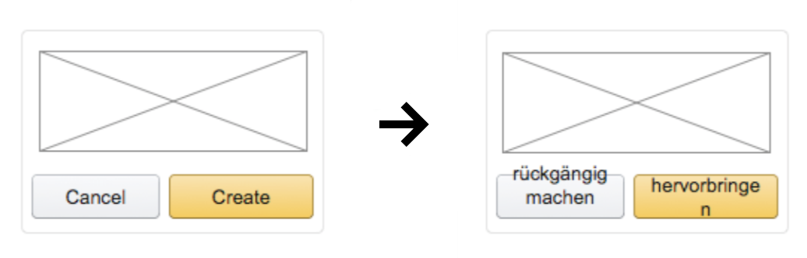
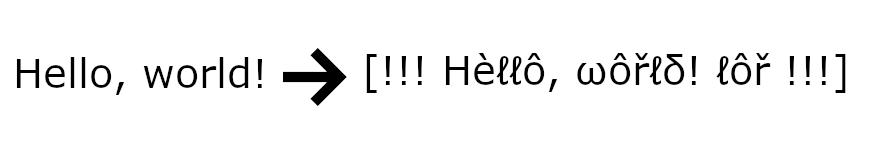

UX helper tool, Axure plugin, Chrome extension, and Greasemonkey script
Today, globalization is necessary. Amazon Seller Central website has sellers from all over the world so we need to make sure that our sellers should be comfortable using our website in their languages. Babel fish is a UX helper tool that helps us to identify internationalization and localizability issues in early so we can speed up development lifecycle.
My responsibilities
Project lead, UX design, and Front-end engineer
Challenge
Mockups are not scalable
Usually, UX designers create and deliver UI mockups in the English language. Many times these mockups are not scalable with other languages. For example, the long German text is not fitting in that small box, or the short Chinese strings look strange in that large panel. It required time and efforts going back and forth with the UX and development teams.

Solutions
Scalable UI mockups and speed up development cycle
We should be able to create scalable UI mockups for other languages before handing off to the development team. The development cycle would be speeded up by Identifying these issues early.
How could we identify UI design issues before handing off to developer team? What if we could translate our mockups into other languages?
Find a right translation method
I did a lot of research on different translation methods we could use and found that:
Machine translation costs a certain amount of money
Human translation also costs time and money
Security issues using 3rd party API to translate Amazon content
And the I realized that we don’t need to do a real translation since pseudo-localization can do:
Fake translation to non ASCII readable English characters
Chinese and Japanese characters are appended and prepended
Increase the string size by 30%
Not require actual language skill
See how the UI handles longer strings
Identify vertical / line-height truncations - caused by Asian and Latin characters

Outcomes and achievements
UX Designers have been actively using these Axure custom library and Chrome extension. I received great feedback from upper management, UX designers, PMs, and engineers from across the seller organizations.
Final implementation
For UX designers to use pseudo-localization method in mockups, I created:
Axure custom library - for UX designers who use Axure
Chrome extension and Greasemonkey script for UX designers who export their mockup to HTML
Axure custom library and Chrome extension tool are coded using JavaScript and pseudo-localization method.
Due to the confidential nature of this project, examples will be provided upon request.
Next steps
I’m planning to have this tool to be available on other design tools such as Sketch and Flinto.